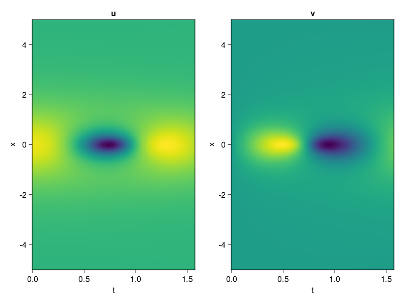
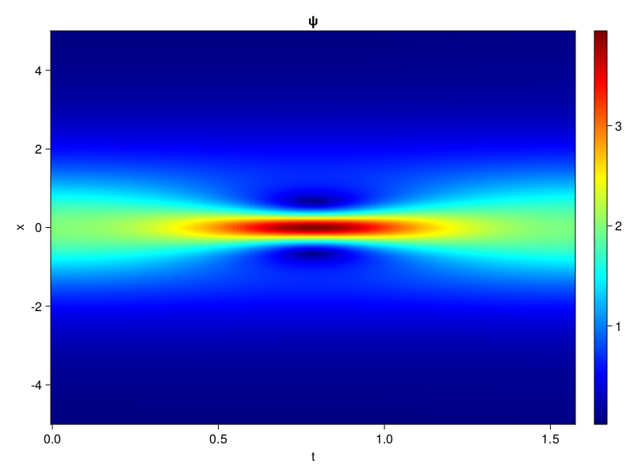
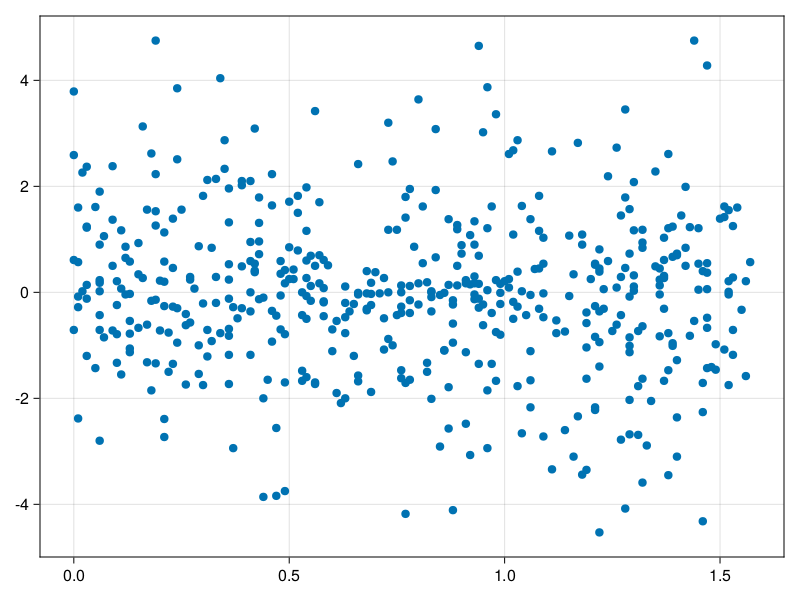

Schrödinger equation
The nonlinear Shrödinger equation is given by
\[\mathrm{i} \partial_t \psi=-\frac{1}{2} \sigma \partial_{x x} \psi-\beta|\psi|^2 \psi\]
Let $\sigma=\beta=1, \psi=u+v i$, the equation can be transformed into a system of partial differential equations
using ModelingToolkit, IntervalSets, Sophon, CairoMakie
using Optimization, OptimizationOptimJL
@parameters x,t
@variables u(..), v(..)
Dₜ = Differential(t)
Dₓ² = Differential(x)^2
eqs=[Dₜ(u(x,t)) ~ -Dₓ²(v(x,t))/2 - (abs2(v(x,t)) + abs2(u(x,t))) * v(x,t),
Dₜ(v(x,t)) ~ Dₓ²(u(x,t))/2 + (abs2(v(x,t)) + abs2(u(x,t))) * u(x,t)]
bcs = [u(x, 0.0) ~ 2sech(x),
v(x, 0.0) ~ 0.0,
u(-5.0, t) ~ u(5.0, t),
v(-5.0, t) ~ v(5.0, t)]
domains = [x ∈ Interval(-5.0, 5.0),
t ∈ Interval(0.0, π/2)]
@named pde_system = PDESystem(eqs, bcs, domains, [x,t], [u(x,t),v(x,t)])\[ \begin{align} \frac{\mathrm{d}}{\mathrm{d}t} u\left( x, t \right) =& - \frac{1}{2} \frac{\mathrm{d}}{\mathrm{d}x} \frac{\mathrm{d}}{\mathrm{d}x} v\left( x, t \right) - \left( \left|u\left( x, t \right)\right|^{2} + \left|v\left( x, t \right)\right|^{2} \right) v\left( x, t \right) \\ \frac{\mathrm{d}}{\mathrm{d}t} v\left( x, t \right) =& \frac{1}{2} \frac{\mathrm{d}}{\mathrm{d}x} \frac{\mathrm{d}}{\mathrm{d}x} u\left( x, t \right) + \left( \left|u\left( x, t \right)\right|^{2} + \left|v\left( x, t \right)\right|^{2} \right) u\left( x, t \right) \end{align} \]
pinn = PINN(u = Siren(2,1; hidden_dims=16,num_layers=4, omega = 1.0),
v = Siren(2,1; hidden_dims=16,num_layers=4, omega = 1.0))
sampler = QuasiRandomSampler(500, (200,200,20,20))
strategy = NonAdaptiveTraining(1,(10,10,1,1))
prob = Sophon.discretize(pde_system, pinn, sampler, strategy)OptimizationProblem. In-place: true
u0: ComponentVector{Float64}(u = (layer_1 = (weight = [-0.26746976375579834 -0.3114299178123474; -0.29363226890563965 0.3541233539581299; … ; -0.2883164882659912 -0.3287280201911926; 0.3170791268348694 0.27139878273010254], bias = [0.0; 0.0; … ; 0.0; 0.0;;]), layer_2 = (weight = [-0.4407510459423065 0.5783445239067078 … -0.08830561488866806 0.5706110596656799; 0.2559318542480469 0.5597050786018372 … -0.23197041451931 0.5259287357330322; … ; 0.12299478054046631 -0.008872550912201405 … 0.5509418845176697 0.26673105359077454; 0.38405901193618774 -0.4358100891113281 … -0.5249872207641602 0.07025879621505737], bias = [0.0; 0.0; … ; 0.0; 0.0;;]), layer_3 = (weight = [-0.4770842492580414 0.5850378274917603 … -0.11148611456155777 -0.3999015986919403; 0.2744165360927582 -0.47380930185317993 … -0.2893574833869934 0.19425274431705475; … ; -0.4343659281730652 0.17431463301181793 … -0.3491799831390381 0.3036416172981262; 0.5315253138542175 0.21247424185276031 … 0.027750840410590172 0.5131241083145142], bias = [0.0; 0.0; … ; 0.0; 0.0;;]), layer_4 = (weight = [0.1284601092338562 0.3797779679298401 … 0.4179365038871765 0.3505949378013611; -0.5099718570709229 0.23481056094169617 … 0.1277596652507782 -0.467800498008728; … ; -0.0634230375289917 -0.3407963812351227 … 0.518190860748291 0.14419470727443695; 0.4147488474845886 -0.21480347216129303 … -0.009949162602424622 -0.17852091789245605], bias = [0.0; 0.0; … ; 0.0; 0.0;;]), layer_5 = (weight = [0.14621375501155853 -0.2765803337097168 … -0.10053654760122299 0.48546886444091797], bias = [0.0;;])), v = (layer_1 = (weight = [-0.03510671854019165 -0.17902833223342896; -0.04259234666824341 0.040186285972595215; … ; -0.2945749759674072 0.2430797815322876; -0.37559717893600464 -0.10312521457672119], bias = [0.0; 0.0; … ; 0.0; 0.0;;]), layer_2 = (weight = [0.1559561789035797 -0.02770025096833706 … -0.4478784501552582 0.09907982498407364; -0.18984781205654144 0.022062204778194427 … -0.43786177039146423 0.21363860368728638; … ; -0.31957316398620605 -0.351788729429245 … 0.3745030462741852 0.4045102596282959; 0.07521020621061325 -0.18955844640731812 … -0.06600936502218246 0.5654868483543396], bias = [0.0; 0.0; … ; 0.0; 0.0;;]), layer_3 = (weight = [0.5819016098976135 -0.3688170909881592 … 0.586428701877594 -0.17618176341056824; 0.4115668535232544 0.2282780408859253 … -0.47416219115257263 -0.5045813322067261; … ; -0.4155057370662689 0.5054689645767212 … -0.4238441288471222 0.5541103482246399; -0.13883055746555328 -0.042989980429410934 … -0.3568377196788788 -0.40251412987709045], bias = [0.0; 0.0; … ; 0.0; 0.0;;]), layer_4 = (weight = [-0.1756705343723297 0.4818395972251892 … 0.10590960830450058 0.21520023047924042; -0.3133922219276428 -0.36266207695007324 … 0.2636387348175049 -0.1588640809059143; … ; -0.49966952204704285 -0.4889432489871979 … 0.13914081454277039 0.13024519383907318; -0.47801297903060913 0.39324963092803955 … -0.33201470971107483 -0.4428359270095825], bias = [0.0; 0.0; … ; 0.0; 0.0;;]), layer_5 = (weight = [0.32758548855781555 0.46999743580818176 … -0.45001983642578125 0.1336900144815445], bias = [0.0;;])))Now we train the neural nets and resample data while training.
function train(pde_system, prob, sampler, strategy, resample_period = 500, n=10)
bfgs = BFGS()
res = Optimization.solve(prob, bfgs; maxiters=2000)
for i in 1:n
data = Sophon.sample(pde_system, sampler)
prob = remake(prob; u0=res.u, p=data)
res = Optimization.solve(prob, bfgs; maxiters=resample_period)
end
return res
end
res = train(pde_system, prob, sampler, strategy)u: ComponentVector{Float64}(u = (layer_1 = (weight = [0.27130428007264035 -0.26594114842645034; -0.4059122127689123 0.47610913550614953; … ; -0.45567064054136913 -0.07339472242285665; 1.3042563770851265 0.09563769495071667], bias = [0.2198504861729786; -0.046677183192734756; … ; -0.07104535942251843; -0.12407303605816916;;]), layer_2 = (weight = [-0.6616529496518593 0.8476981941323168 … -0.6173203692469564 0.36832870499254083; 0.480522113046358 0.49468104726985423 … -0.6235900180617118 0.5298632762891801; … ; -0.016736855644818104 -0.19699662662565767 … 0.4598308997178205 0.14104224124328082; 0.5785805582786688 -0.31334448410083016 … -0.40376294818158476 0.15784925536388103], bias = [0.18394392497492762; 0.08495906078596227; … ; -0.040646531825699585; 0.002773902600930097;;]), layer_3 = (weight = [-0.21974107776554885 0.19656704321628693 … -0.3770392178027493 -0.5595170927375027; 0.31387266892664145 -0.00982684509390983 … -0.10093097321097258 0.4807965695421812; … ; -0.581605942716118 0.22210192023096936 … 0.061967827605310624 -0.022174871845846544; 0.5563929509569467 0.10618264322079587 … 0.04248839847405338 0.5419594362142133], bias = [0.014456805156089466; 0.013719413735077448; … ; 0.03943359463722771; -0.1273420401405151;;]), layer_4 = (weight = [-0.045437707925250495 0.5395919363276698 … 0.36603085564729787 0.19806794892516097; -0.81668174435341 0.03534403068861471 … 0.12190748321915487 -0.5258989594419655; … ; -0.050804663073353434 -0.2702531062631529 … 0.6862825213388459 0.12333123902189047; 0.9520319136968962 -0.6286184588966365 … 0.13584217008983065 -0.45216960728811845], bias = [0.07277363447406408; 0.06348396527428468; … ; 0.12353945319661408; 0.08468886477313262;;]), layer_5 = (weight = [-0.4960812269734468 0.8112308055599097 … 0.6388048542895298 0.24841448961274717], bias = [0.07421384715734768;;])), v = (layer_1 = (weight = [0.24657970493450376 -0.3132639841279625; -0.41156147365832824 -0.09158500220130085; … ; 0.07745777181705547 0.2454434634215062; -1.1400803199450642 -0.6527347807489686], bias = [-0.08302412324379527; 0.04139577540769054; … ; 0.010945246509381562; 0.46643396211625493;;]), layer_2 = (weight = [0.05899062549607558 0.12491798822015875 … -0.18022918090551715 0.20953754436276112; -0.307310704549563 0.31390857600680844 … -0.3789268464351744 0.9515632424437208; … ; 0.025092235032944034 -0.42968840589010876 … 0.17238879381444544 0.45392224259082237; 0.11070041696686955 -0.10533172362192667 … -0.3309090843411648 0.64475503251405], bias = [0.09190589999399205; -0.047195007296804814; … ; -0.08196643849140184; -0.6554124640731723;;]), layer_3 = (weight = [0.42942518375858274 -0.012024942518309245 … 0.4392670579335194 -0.7452740178816076; 0.1497907715375765 0.09998943531961567 … -0.5782945718311342 -0.2983590956664088; … ; -0.3971415517537366 0.09693501731592821 … -0.23329289142180698 0.6133536186283787; -0.25749768247639365 0.12270450350807324 … -0.06908814770780553 -0.8291678606521983], bias = [-0.036595020542903436; 0.4918282954457165; … ; -0.013729975141254045; -0.2007547878740345;;]), layer_4 = (weight = [0.012870154516652268 0.6858422605028472 … -0.1314640765603773 0.4243946572009651; -0.2526727956975127 -0.1494021318042127 … -0.13287277557466048 -0.03200347286779559; … ; -0.6385056384457357 -0.025025990113527262 … -0.036995826446988754 -0.3441779815194074; -0.27579256137508096 0.20381682138691426 … -0.2648484587517906 -0.5967182282831035], bias = [0.05219740332765477; -0.2966700812640822; … ; 0.33949935640719053; -0.1918508068128123;;]), layer_5 = (weight = [0.35426020466274427 0.12387169943719838 … -0.5224503307670201 -0.12328718564469102], bias = [0.23038884173890975;;])))phi = pinn.phi
ps = res.u
xs, ts= [infimum(d.domain):0.01:supremum(d.domain) for d in pde_system.domain]
u = [sum(phi.u(([x,t]), ps.u)) for x in xs, t in ts]
v = [sum(phi.v(([x,t]), ps.v)) for x in xs, t in ts]
ψ = @. sqrt(u^2+ v^2)
axis = (xlabel="t", ylabel="x", title="u")
fig, ax1, hm1 = heatmap(ts, xs, u', axis=axis)
ax2, hm2= heatmap(fig[1, end+1], ts, xs, v', axis= merge(axis, (; title="v")))
display(fig)
axis = (xlabel="t", ylabel="x", title="ψ")
fig, ax1, hm1 = heatmap(ts, xs, ψ', axis=axis, colormap=:jet)
Colorbar(fig[:, end+1], hm1)
display(fig)
Customize Sampling
Bascially any sampling method is supportted. For example we can sample data according to the predicted solution.
using StatsBase
data = vec([[x, t] for x in xs, t in ts])
wv = vec(ψ)
new_data = wsample(data, wv, 500)
new_data = reduce(hcat, new_data)
fig, ax = scatter(new_data[2,:], new_data[1,:])
prob.p[1] = new_data
prob.p[2] = new_data
prob = remake(prob; u0 = res.u)
# res = Optimization.solve(prob, bfgs; maxiters=1000)OptimizationProblem. In-place: true
u0: ComponentVector{Float64}(u = (layer_1 = (weight = [0.27130428007264035 -0.26594114842645034; -0.4059122127689123 0.47610913550614953; … ; -0.45567064054136913 -0.07339472242285665; 1.3042563770851265 0.09563769495071667], bias = [0.2198504861729786; -0.046677183192734756; … ; -0.07104535942251843; -0.12407303605816916;;]), layer_2 = (weight = [-0.6616529496518593 0.8476981941323168 … -0.6173203692469564 0.36832870499254083; 0.480522113046358 0.49468104726985423 … -0.6235900180617118 0.5298632762891801; … ; -0.016736855644818104 -0.19699662662565767 … 0.4598308997178205 0.14104224124328082; 0.5785805582786688 -0.31334448410083016 … -0.40376294818158476 0.15784925536388103], bias = [0.18394392497492762; 0.08495906078596227; … ; -0.040646531825699585; 0.002773902600930097;;]), layer_3 = (weight = [-0.21974107776554885 0.19656704321628693 … -0.3770392178027493 -0.5595170927375027; 0.31387266892664145 -0.00982684509390983 … -0.10093097321097258 0.4807965695421812; … ; -0.581605942716118 0.22210192023096936 … 0.061967827605310624 -0.022174871845846544; 0.5563929509569467 0.10618264322079587 … 0.04248839847405338 0.5419594362142133], bias = [0.014456805156089466; 0.013719413735077448; … ; 0.03943359463722771; -0.1273420401405151;;]), layer_4 = (weight = [-0.045437707925250495 0.5395919363276698 … 0.36603085564729787 0.19806794892516097; -0.81668174435341 0.03534403068861471 … 0.12190748321915487 -0.5258989594419655; … ; -0.050804663073353434 -0.2702531062631529 … 0.6862825213388459 0.12333123902189047; 0.9520319136968962 -0.6286184588966365 … 0.13584217008983065 -0.45216960728811845], bias = [0.07277363447406408; 0.06348396527428468; … ; 0.12353945319661408; 0.08468886477313262;;]), layer_5 = (weight = [-0.4960812269734468 0.8112308055599097 … 0.6388048542895298 0.24841448961274717], bias = [0.07421384715734768;;])), v = (layer_1 = (weight = [0.24657970493450376 -0.3132639841279625; -0.41156147365832824 -0.09158500220130085; … ; 0.07745777181705547 0.2454434634215062; -1.1400803199450642 -0.6527347807489686], bias = [-0.08302412324379527; 0.04139577540769054; … ; 0.010945246509381562; 0.46643396211625493;;]), layer_2 = (weight = [0.05899062549607558 0.12491798822015875 … -0.18022918090551715 0.20953754436276112; -0.307310704549563 0.31390857600680844 … -0.3789268464351744 0.9515632424437208; … ; 0.025092235032944034 -0.42968840589010876 … 0.17238879381444544 0.45392224259082237; 0.11070041696686955 -0.10533172362192667 … -0.3309090843411648 0.64475503251405], bias = [0.09190589999399205; -0.047195007296804814; … ; -0.08196643849140184; -0.6554124640731723;;]), layer_3 = (weight = [0.42942518375858274 -0.012024942518309245 … 0.4392670579335194 -0.7452740178816076; 0.1497907715375765 0.09998943531961567 … -0.5782945718311342 -0.2983590956664088; … ; -0.3971415517537366 0.09693501731592821 … -0.23329289142180698 0.6133536186283787; -0.25749768247639365 0.12270450350807324 … -0.06908814770780553 -0.8291678606521983], bias = [-0.036595020542903436; 0.4918282954457165; … ; -0.013729975141254045; -0.2007547878740345;;]), layer_4 = (weight = [0.012870154516652268 0.6858422605028472 … -0.1314640765603773 0.4243946572009651; -0.2526727956975127 -0.1494021318042127 … -0.13287277557466048 -0.03200347286779559; … ; -0.6385056384457357 -0.025025990113527262 … -0.036995826446988754 -0.3441779815194074; -0.27579256137508096 0.20381682138691426 … -0.2648484587517906 -0.5967182282831035], bias = [0.05219740332765477; -0.2966700812640822; … ; 0.33949935640719053; -0.1918508068128123;;]), layer_5 = (weight = [0.35426020466274427 0.12387169943719838 … -0.5224503307670201 -0.12328718564469102], bias = [0.23038884173890975;;])))